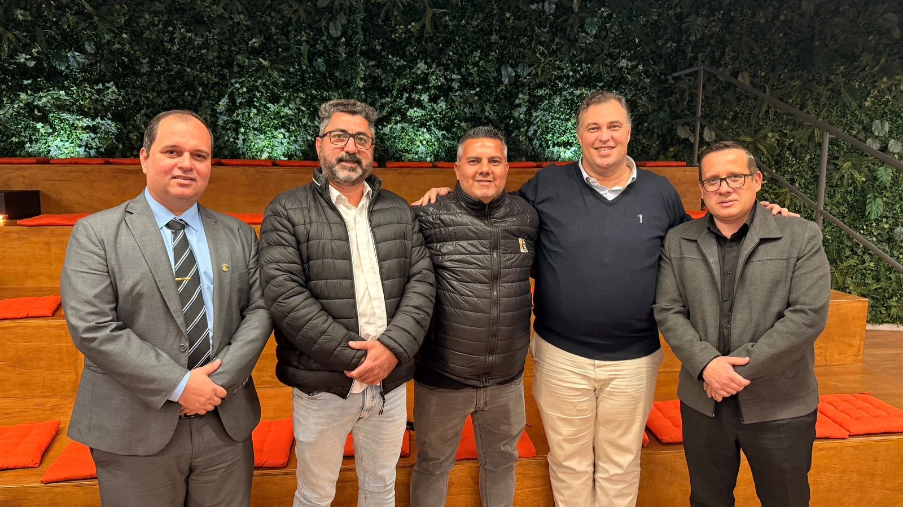
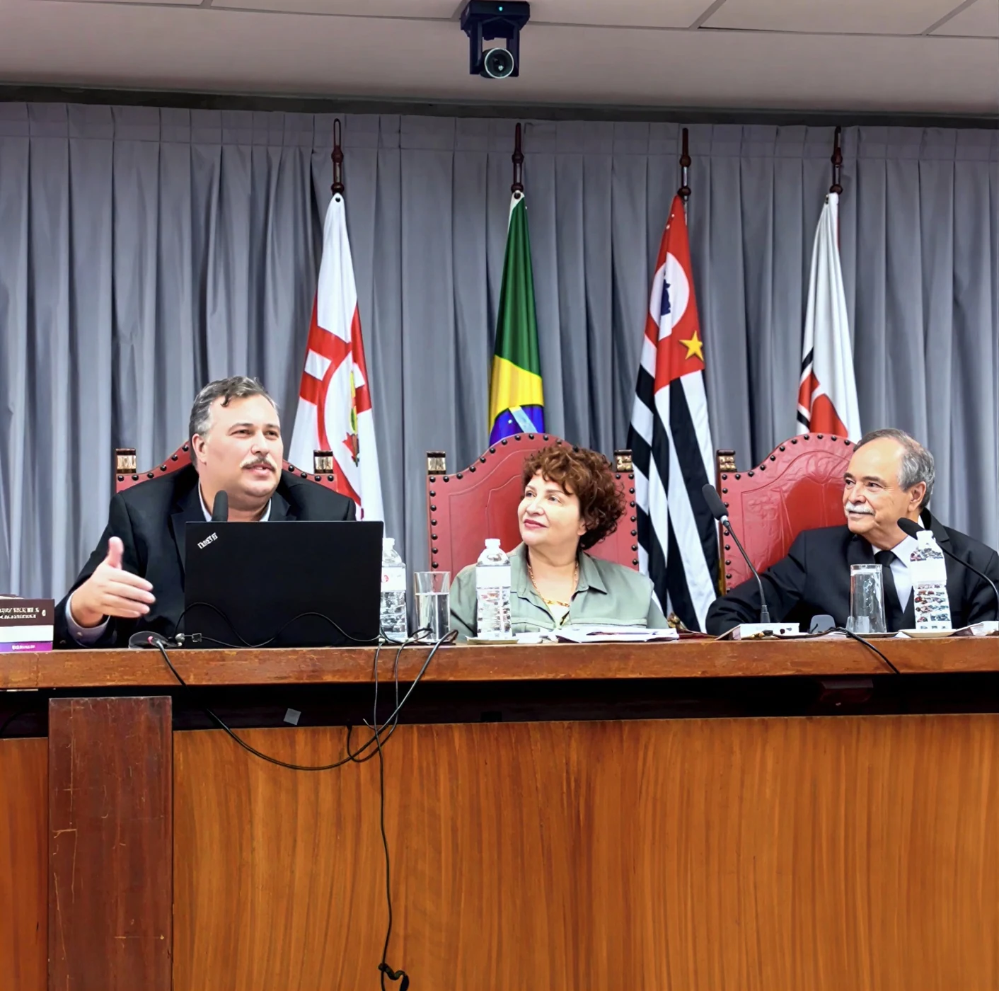

3 a 6 anos · Livro 1
3 a 6 anos · Livro 1Educação Infantil
Oito virtudes trabalhadas com oralidade, histórias, brincadeiras e desenho. A presença do adulto, o vínculo e o exemplo orientam a experiência das crianças.

Uma visão ampliada da atuação do Humanar, com registros do sistema penitenciário e judiciário, ações com crianças e famílias, saúde mental e dependências, publicações e cooperações.
90 páginas · leitura na tela e arquivo original para download
O Inteiras mobiliza mulheres e homens em percursos formativos gratuitos, com foco em autonomia, discernimento, responsabilidade e autocontrole. A camiseta leva dois QR Codes que dão acesso aos programas.
Conheça o movimento no site oficialO desenvolvimento em virtudes chega a pessoas privadas de liberdade e a profissionais do sistema penitenciário, acompanhado de formação e articulação institucional.
Encontro no Hospital de Custódia e Tratamento Psiquiátrico de Franco da Rocha, com apresentação de conhecimentos sobre desenvolvimento humano.
Conheça O Novo Eu para PPLUm percurso autônomo de estudo e prática de 17 virtudes, com o Manual de Saúde Mental do Policial Penal e materiais próprios para a realidade profissional.
Conheça o programa e baixe o manual

Em 25 de junho de 2026, Eduardo Casarotto participou, em São Paulo, da reunião do Programa Semear dedicada à inovação e à cooperação na execução penal. Integrou o grupo de trabalho para levar o programa a Mato Grosso.
O encontro ocorreu no Instituto Ação Pela Paz. A matéria do TJSP identifica Eduardo pelo curso da Faceo.
Leia o registro no TJSPA coleção Guia das Virtudes aproxima a Virtologia das situações que crianças, adolescentes e famílias vivem em casa, na escola e na comunidade. Histórias, afirmações, brincadeiras, exercícios e registros ajudam a compreender cada virtude e a experimentá-la nas relações do dia a dia.
O percurso combina leitura e experiência: reconhecer uma situação, escolher uma atitude concreta, praticá-la e retomar o que aconteceu. Educadores e familiares participam pela orientação, pelo exemplo e pela continuidade das experiências.
Explore os registros na apresentação 3 a 6 anos · Livro 1
3 a 6 anos · Livro 1Oito virtudes trabalhadas com oralidade, histórias, brincadeiras e desenho. A presença do adulto, o vínculo e o exemplo orientam a experiência das crianças.
 6 a 10 anos · Livro 2
6 a 10 anos · Livro 2Dezesseis virtudes, com significados, afirmações, hábitos e histórias que conduzem à escolha de uma ação concreta, à prática e ao registro, com apoio do educador.
 11 a 14 anos · Livro 3
11 a 14 anos · Livro 3Onze virtudes, com histórias, debates, hábitos e diário. O estudante reflete sobre identidade, convivência, consequências de suas escolhas e compromissos que pode assumir.
 Fundamentação e orientação
Fundamentação e orientaçãoSete condições e treze passos apoiam o planejamento, as atividades, as rodas de conversa, os registros e a participação das famílias, respeitando a idade da turma.
Relacionar a virtude a uma história ou situação real.
Definir uma atitude concreta para experimentar no cotidiano.
Contar com a orientação do educador e a participação da família.
Registrar, compartilhar e rever o que aconteceu.
A organização de referência distribui compreensão e prática em duas semanas iniciais, seguidas de retomadas. As revisões em 7, 30, 90 e 180 dias dão continuidade ao percurso. Cada instituição planeja os encontros e acompanha os registros com sua equipe responsável.

Escolhas, conflitos, pressão do grupo e prevenção da violência fazem parte do trabalho com adolescentes. O Livro do Aluno propõe reflexões e exercícios para relacionar esses temas às situações vividas pelos jovens.
O Livro do Professor orienta ciclos de estudo, rodas de conversa, práticas e registros, articulando escola, equipe e família. Os dois volumes apoiam a mediação dos educadores e a formação para relações de respeito.
Legendas disponíveis nos controles do vídeo (CC).
Vídeo: Virtologia — Instituto Virtudes · Nova Geração Brasil
Na ONG Nova Geração Brasil, em São João del-Rei, a experiência com o Guia das Virtudes também foi acompanhada em um estudo institucional com familiares adultos das crianças e dos adolescentes atendidos. Em janeiro de 2026, cinco encontros semanais trabalharam Humildade, Brandura, Paciência e Responsabilidade, com atividades e práticas ligadas ao cotidiano.
O estudo de Eduardo Casarotto, sistematizado pelo Instituto Virtudes em maio de 2026, reúne avaliações antes e depois, o relatório das aplicadoras e depoimentos dos participantes. Seis familiares integraram a intervenção; cinco concluíram as duas avaliações. Quatro desses cinco ampliaram a soma de suas pontuações nas quatro virtudes trabalhadas.
Os achados são exploratórios: a amostra é pequena e o grupo de comparação não teve pós-avaliação completa. Eles ajudam a registrar a experiência e a orientar novos estudos; não estabelecem eficácia clínica nem comprovam alterações cerebrais.

Evidências empíricas preliminares de uma intervenção virtológica breve em famílias em vulnerabilidade social
Eduardo Casarotto · Instituto Virtudes · Maio de 2026 · 27 páginas
Baixar estudo em português ↓Documento integral. O idioma do arquivo acompanha o idioma desta página.
Relatos sobre o uso dos materiais com crianças e adolescentes, no Brasil e no Japão. São experiências pessoais, com seus próprios contextos e percepções.
Depoimentos do Mirai Kokoro Project sobre o Guia das Virtudes e a Virtologia no trabalho com crianças, famílias e comunidades no Japão.
Duração: 3:48 · Legendas disponíveis nos controles do vídeo (CC).
Ana Karolina, mãe e virtóloga, compartilha a experiência de Enzo com o Guia das Virtudes e as mudanças percebidas em seu desenvolvimento.
Duração: 1:49 · Legendas disponíveis nos controles do vídeo (CC).
Aluna da formação em Virtologia, Dinorá relata sua experiência de aplicação com adolescentes com transtornos do neurodesenvolvimento.
Duração: 3:57 · Legendas disponíveis nos controles do vídeo (CC).
O trabalho Formando o futuro: a Virtologia como caminho ético para a saúde mental infantojuvenil recebeu o 1º lugar no VI Brazilian Congress of Health, realizado on-line em 11 de junho de 2025. O certificado reconhece a autoria de Eduardo Casarotto.
O artigo de Eduardo Casarotto e Flávia Fontana foi publicado na Educere — Revista da Educação da UNIPAR, em 24 de abril de 2026. Discute o desenvolvimento de virtudes, a formação ética e a saúde mental de crianças e adolescentes.


O Novo Eu para pessoas com dependências e compulsões utiliza o livro O Que Nos Prende. O percurso contempla dependências relacionadas a substâncias e a comportamentos como apostas, telas, alimentação, compras e outras compulsões, com conteúdos próprios para a pessoa e a família.
A proposta pode ser construída com serviços de saúde, instituições e redes de apoio. A aproximação com a rede pública de saúde é uma frente de cooperação que o Humanar busca desenvolver.
Na Clínica da Alma, em Mato Grosso, aulas e prática de virtudes integram a trajetória do programa em comunidade terapêutica. Os relatos dos participantes mencionam perdão, perseverança, brandura, aceitação e fé.
Formação em virtudes para pessoas privadas de liberdade nos regimes fechado e semiaberto. O ACT nº 018/00/2026 foi assinado em 16 de junho de 2026 e publicado em 19 de junho.
Diário Oficial de São Paulo · Código 2026.06.18.1.3.12.23.2.1925088.
Consultar publicação oficialA frente envolve formação, saúde mental e apoio técnico e analítico. O extrato do acordo SAP–Recomeçar e o termo complementar Recomeçar–Virtudes documentam responsabilidades distintas.
O extrato identifica a SAP, por intermédio da Polícia Penal e da CECP, e o Instituto Recomeçar. O termo com o Instituto Virtudes trata do apoio técnico, dos dados e dos indicadores.
Consultar extrato SAP–Recomeçar
Apresente seu interesse em cooperações, aplicação dos projetos ou formas de ampliar o acesso aos materiais e às ações educativas. Na página de Contato, você encontra as orientações para apresentar sua proposta.